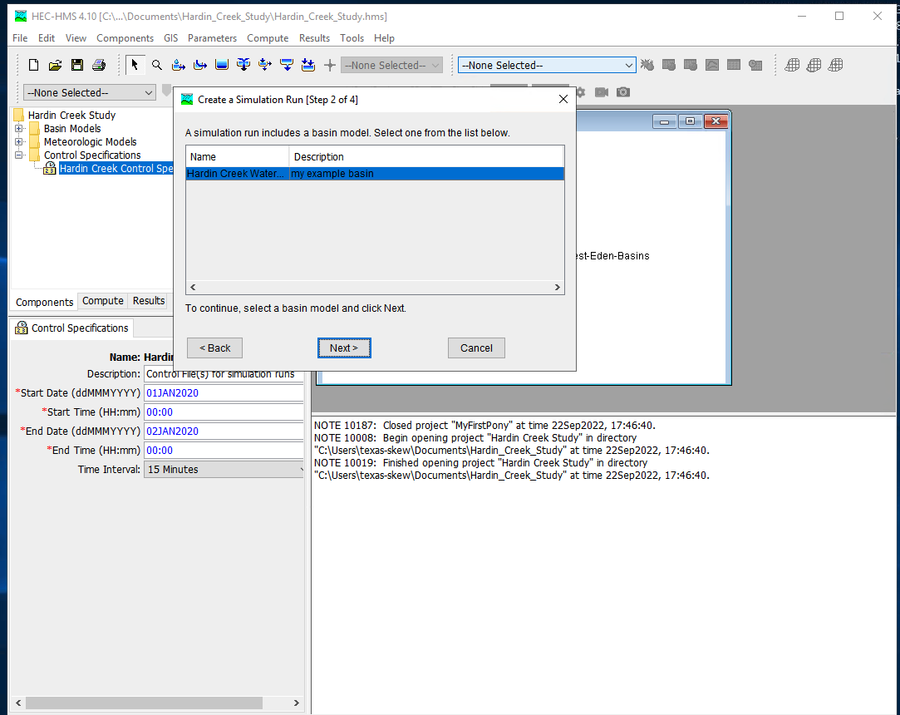

HEC-HMS Introduction¶
This section covers
Install HEC-HMS
Verify Install when GUI loads
Build a minimal model
Project Create
Basin Model
Meteorological Model
Control Specifications
Simulation Run Manager
Run Simulation
Examine the output
A fully provisioned Windows Implementation of HEC-HMS is located at:
server_name: kittyinthewindow.ddns.net
user_name: texas-skew
passwd: peakfq73$hare
Users must access using Remote Desktop Protocol (Built into Windows, Apple Store has a free Mac application). The examples in the class will use this server.
HEC-HMS Project¶
The project is the structure to contain all the files related to some particular project. Think of it as a model directory.
To create a new project simply select NEW from the file menu :

and then select units (SI or Imperial) and name the project:

HEC-HMS Minimal Model¶
A minimal model consists of
Basin Model
Meteorological Model
Control Specifications
Basin Model Specification¶
For this example we will use the Hardin Creek basin which is about 17 square miles. For the example we will neglect the reservoirs and model the whole thing as a singe watershed.
To create a basin model, select Components from the menu then Basin Manager

As with most HMS creator dialogs, you next name the basin.

Meterological Model Specification¶
To create a meterological model, select Components from the menu then Meterological Model Manager

As with most HMS creator dialogs, you next name the model.

Control Model Specification¶
The last component is the control specification model (with dates and times for the simulation period). To create a control model, select Components from the menu then Control Model Manager

Then next name the model.

Parameterizing the models¶
Now that the pieces are built, we need to supply watershed and rainfall characteristics to the components for a useable model. First we will simulate the entire watershed as a single basin, with CN=98, and all other watershed-based model components disabled (i.e. None)
First build the single basin

Then supply the inputs, first area and the CN model. Disable all the remaining methods (choose –None–)

Then the CN parameters (same as in class)

Then supply the meterological model inputs, for the example we will use an SCS design storm, in HMS its called “hypothetical” storm.

Then be sure the correct basins are attached to the precipitation input signal

Next select the storm itself and supply model inputs

Now select the control specifications and provide needed time values (must be calendar/clock time, HMS does not easily handle elapsed times - you can use fake dates as needed)

Now one can select simulation run builder




Once these are complete select Finish and the run manager is loaded, next select the particular run to active the compute engine

At this point it should be ready, this is a good time to save the project, then reload the saved project from the file menu. Now attempt to run the simulation by selecting the exploding raindrop!

With some luck it works like

With a suseccful run we can examine various output features - to complete this notebook section we will just use a default chart of runoff from the watershed. Select the Results/Element_Graph to get:

There are tutorials and examples in the User Manual for the software.
The first reference below is a pdf slide presentation of a training example for Ash Creek in Dallas Texas.